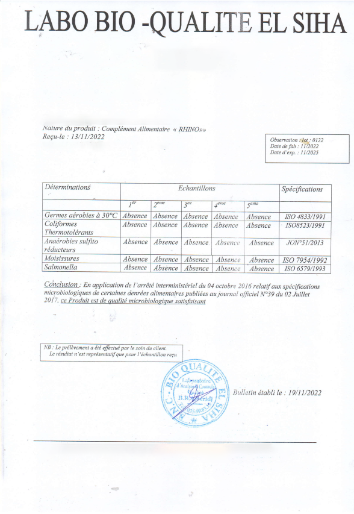

الآن يمكن لكل رجل التغلب على التهاب البروستات و زيادة قوته الذكورية .
تم إكتشاف تركيبة للتخلص من مشاكل البروستات بكل سهولة و بالمنزل
مشاكل البروستات هي حالة تحدث نتيجة للتورم والتهيج في الغدة البروستاتية، وهو يشكل مشكلة شائعة لدى الرجال. يمكن أن تحدث مشاكل البروستات على الرغم من عدم وجود عوامل خطر خاصة، ولكن تعد العوامل الأكثر شيوعًا التي تزيد من خطر الإصابة بالتهاب البروستات العمر وتاريخ الإصابة بالعدوى البكتيرية.
سوف ننشر لكم تفاصيل اللقاء ما بين مراسلة و مختص و التحدث حول مشاكل البروستات و كيفية التخلص من إلتهاب البروستات بسهولة و بطريقة طبيعية .
إقرأ في هذا المقال : كيف سيساعد هذا المنتج في مساعدة الكثير من الرجال العرب في التخلص من مشاكل البروستات و أيضاً كيفية الحصول على هذا المنتج بسهولة في الجزائر .
المراسلة : أولاً، أخبرني إلى أي مدى تأخرنا في تطوير طرق للتخلص من مشاكل البروستاتا؟
المختص : لا أريد أن أتحدث عنها علانية و لكن الدافع هنا شخصي. قبل بضع سنوات توفي والدي بسرطان البروستاتا. بدا أن كل شيء يسير على ما يرام ثم جاء الموت المؤلم. لذلك بدأت في دراسة القضايا المتعلقة بجراحة المسالك البولية. لقد صُدمت عندما أدركت أن معظم الحبوب الموجودة في الصيدليات هي مواد كيميائية غير مجدية يمكنها فقط زيادة شلل الجسم بالكامل. وكان والدي يشربهم كل يوم.
سرطان البروستاتا
في السنوات الثلاث الماضية - انغمست تمامًا في هذا الموضوع. في الواقع، ظهرت طريقة جديدة للتعامل مع التهاب البروستاتا والتي يتحدث عنها الجميع الآن في عملية كتابة عمل علمي. أدركت أنني قد اخترعت شيئًا جديدًا. لكنني لم أستطع حتى التفكير في أنه سيثير اهتمامًا كبيرًا من مختلف الهياكل.
المراسلة : ما هي عواقب إهمال مشاكل البروستات ؟
المختص : لقد كان لدي مرضى خضعوا لجميع أنواع الفحوصات و تخلصوا من مشاكل البروستات باستخدام العديد من الطرق المختلفة، والحقيقة هي أن مع مرور الوقت تصبح هذه الطرق غير نافعة بالمرة .
المختص : يبدو أن الناس يدفعون كل عام مقابل طرق للتخلص من الألم ولكن لا تغير هذه الطرق الوضع بشكل جذري. فالإنسان يعتاد على هذه الطرق و لن يستطيع التخلص منها في المستقبل او العيش بدونها .
المراسلة : كيف تفسر ما هي الأسباب لمشاكل البروستات ؟
المختص : الفكرة بسيطة - و لا تسمعوا الكلام الذي يقول انه لا يمكن التخلص من مشاكل البروستات، خاصة في سن كبير . ومع الأشخاص الأكبر سنًا .
البروستاتا الطبيعي والبروستاتا الملتهبة
المراسلة : ما هي طريقتك في التعامل مع مشاكل البروستات ؟
المختص : اسمحوا لي بصراحة ان اقول انني شخصياً كنتُ أحاول التخلص من مشاكل البروستات باستخدام الوسائل التقليدية غير الفعالة تمامًا كبقية الناس .
المراسلة : يبدو ذلك مثيرًا للاهتمام للغاية، يمكنك الحديث عنه بشكل أكثر تفصيلًا؟
المختص : كل ما نأكله يمكن تقسيمه إلى نوعين من المنتجات: الضارة والمفيدة. الآن دعنا نتحدث عن هذا بالتفصيل. استنتجت من بحثي أن هناك منتجات لا يمكن تناولها من قبل الأشخاص الذين يعانون من مشاكل البروستات.
المختص : المنتج الأول الذي يجب استبعاده من النظام الغذائي هو الكحول. يمكن للكحول تفاقم مشاكل البروستات وزيادة الألم وتعزيز الأعراض. كما يمكن أن يؤثر على وظيفة الجهاز البولي التناسلي، مما يمكن أن يفاقم أعراض البروستات.
المختص : المجموعة الثانية من المنتجات التي يفضل تجنبها في حالة مشاكل البروستات هي الأطعمة الحارة والدهنية. يمكن أن تزعج البروستات وتزيد من مشاكلها مما يسبب الألم وعدم الراحة. بالإضافة إلى ذلك، فإن الأطعمة الحارة والدهنية قد تؤثر على وظيفة الجهاز البولي التناسلي وتزيد من الأعراض المصاحبة لمشاكل البروستات.
المختص : المنتج الثالث الذي يجب استبعاده من نظامك الغذائي هو اللحوم الحمراء. تحتوي اللحوم الحمراء على كمية كبيرة من الدهون المشبعة التي يمكن أن تزيد من مشاكل البروستات. كما يمكن أن تؤثر على وظيفة الجهاز البولي التناسلي وتسبب مشاكل صحية أخرى.
بشكل عام، يجب تجنب تناول الأطعمة الحارة والدهنية واللحوم الحمراء والأطعمة التي تحتوي على كميات عالية من السكريات والمواد الحافظة عند الشعور انه لديك مشاكل بالبروستات . من الأفضل التركيز على الأطعمة الأكثر فائدة مثل الخضروات والفواكه والأعشاب الطازجة والمكسرات ومنتجات البحر، والتي يمكن أن تساعد على تحسين صحة البروستات.
الطبيب خوسيه إميليو
المختص : الآن، أودُّ أنْ أتحدَّثَ عن المنتجات التي يمكن أن تُحسِّنَ الحالة عِنْدَ الإصابة بمشاكل البروستات،سوف اذكر لكم كل شيء في هذه المقابلة .
المختص : إضافة إلى الأطعمة التي يجب تجنبها في حالة الإصابة بمشاكل البروستات، يوجد بعض الأطعمة التي يمكن إدراجها في نظامك الغذائي لتحسين حالتك. ورغم كون القائمة كبيرة، إلا أنني قمت باختيار بعض الأطعمة التي أثبتت فعاليتها بناءً على اسس علمية .
المراسلة : و ما هي هذه المنتجات ؟
المختص : في المرتبة الأولى، أضع تونكة علي .
التونكات على , تحفز قشرة الغدد الكظرية , والخصيتين على افراز هرمون التستستيرون , عن طريق تنبيه المخ لزيادة افرازه , مما يؤدى دور المنشطات الجنسية للرجال فى تحسين قوة الآداء الجنسى بشكل أفضل مما تقوم به المنشطات الجنسية
المختص : المنتج الثاني الذي أود الحديث عنه هو القراص.
القراص هو نبات يستخدم في حالات الإصابة بمشاكل البروستات . القراص يحتوي على العديد من المواد المفيدة، مثل الفيتامينات والمعادن ومضادات الأكسدة، التي يمكن أن تساعد في تقليل مشاكل و ألام البروستات.
إن القراص يكون له تأثير مدر للبول، مما يعني أنه يمكن أن يساعد على تحسين عملية التبول، وتقليل تكرار التبول والشعور بالتوتر في منطقة البروستات.
بالإضافة إلى ذلك، يمكن أن يحتوي القراص على خصائص مضادة لمشاكل البروستات الاكثر شيوعاً مما يمكن أن يساعد على تقليل مشاكل البروستات وتحسين الحالة العامة للرجال .
المراسلة : مثير للاهتمام جدا، أخبرنا بالتفصيل من فضلك كيف يجب تناول هذه المنتجات بكميات وتكرارات معينة للرجال وماذا يمكن القيام به إذا لم تكن هذه المنتجات متاحة في المتاجر؟
المختص : واجه مرضاي مشكلة كبيرة في إيجاد هذه المنتجات بسبب انها مكونات موسمية وعدم توفرها بشكل دائم . كما أنه من الصعب الالتزام بالتناسب الصحيح، حيث يتم الحصول على أفضل تأثير عندما يكون التوازن بين القراص و تونكة علي . وقد واجهت نفس السؤال في وقت سابق ولم أستطع العثور على حل لفترة طويلة. لكن زملائي جاءوا للمساعدة وأخبروني عن منتج طبيعي تمامًا يسمى " RHINOXX " والذي تحتوي المكونات الرئيسية فيه على مستخلصات من القراص و تونكة علي و الجينسينج الأحمر و الماكا و غوارانا و الزنجبيل و السيلينيوم و كافيين و تورين و فيتامينات ب1-ب6-ب12 . طلبت من أصدقائي إحضار هذا المنتج لي ، أجريت تحليلًا مخبريًا لتحديد التركيب، وتبين أنه يتوافق فعلاً مع الاسم الموجود عليه . بعد كل التحليلات، قررت اختبار هذا المنتج على نفسي. ونتيجة لذلك، يمكنني القول إنني نسيت مشاكل البروستات بالفعل بعد إستخدامه . فقط بعد أن اختبرت منتج " RHINOXX " على نفسي وتأكدت من النتيجة، بدأت في وصفه لجميع الناس و انصحهم به دائماً . منذ الأيام الأولى للاستخدام، بدأ مرضاي في إعطائي تقييمات إيجابية، والتي ترتبط بتخفيف الألم والمشاكل العامة المتعلقة بتفاقم مشاكل البروستات. وحتى الآن لم أعثر على بدائل جيدة. لذلك، لا يزال من المستحسن لجميع اللذين يعانون من مشاكل البروستات تناول " RHINOXX ".
المراسلة : ما التغييرات التي شعرت بها بعد بدء استخدام RHINOXX ؟
المختص : أريدُ أنْ أشارِكَ تجربتي. حرفيًا من الأيامِ الأولى للتناول - شعرتُ بتخفيفِ الألمِ المرتبِط بالبروستات . بعدما مضى بعض الوقت، أصبحَ تبولي أكثرَ انتظامًا وأقلَّ مؤلمًا، وأصبحت رغبتي الصباحية في التبولِ أقلَّ تكرارًا. لقدْ لاحظتُ أيضًا تحسُّن جودة نومي وتقليل تكرار الاستيقاظ ليلاً بسبب التبول. بشكل عام، أشعرُ بأنني بصحةٍ أفضل وأكثر راحةً، وأستمرُّ في تناولِ حبوب RHINOXX للحفاظ على صحةِ البروستات، لأنه تمامًا طبيعيٌ ولن يؤذيي التونكة علي او القراص صحتي .
المراسلة : ما هي أعراض مشاكل البروستات :
- صعوبة التبول: قد تشعر بألم عند التبول، وتشعر بأن البول لا يخرج بسلاسة.
- التبول المتكرر: قد تشعر بحاجة متكررة للتبول، حتى في حالة عدم وجود الكمية الكافية من البول في المثانة.
- الشعور بألم في منطقة الحوض والعانة: قد تشعر بألم أو ضغط في العانة أو الحوض.
- صعوبة في الإنتصاب: قد تؤثر مشاكل البروستات على القدرة الجنسية وتؤدي إلى صعوبة في الإنتصاب.
- الم الخصيتين: قد يشعر بألم في الخصيتين أو في منطقة العانة.
- دم في البول
- إفرازات الإحليل: قد تكون الإفرازات الإحليلية غير طبيعية وتصبح على شكل قطرات أو مزيج من الماء والدم.
- ألم في المنطقة الواقعة بين كيس الصفن والمستقيم (العجان)
- القذف المؤلم
المختص :
المراسلة : هل يمكنك إفادتنا . ما هي مكونات هذا المنتج ؟
المختص : يتكون هذا المنتج من مكونات طبيعية 100% و سأقولها لكم الأن
- الجينسينج الاحمر
- نبات القراص
- نبتة الماكا
- الزنجبيل
- تونكات علي

يحتوي الجينسينج الاحمر على مركبات مضادة للالتهابات مثل الصابونين تقضى على مشاكل البروستات ويحتوي على مضادات للميكروبات والفيروسات ويحتوي مضادات للأكسدة تنشط المناعة مما يقضي على مشاكل التبول الناتجة عن مشاكل البروستات

تحتوي الأوراق والجذور والبذور من نبات القراص على مواد فعالة طبيعية مثل البيتا-ستيرويدات والتربينوئيدات والمواد المضادة للإلتهابات، والتي تساعد على تقليل مشاكل البروستات وتحسين الأعراض المرتبطة بها.

تساعد على التخلص من الضعف الجنسي و يمكن أن تساعد جذور الماكا على التخلص من ضعف الانتصاب

يوجد في الزنجبيل فيتامين أ وفيتامين ج وفيتامين هـ وبيتا كاروتين والزنك، وجميع مضادات الأكسدة القوية التي تدافع عن البروستاتا من الجذور الحرة الضارة التي تُسرع تطور التضخم

تناول تونكات علي بانتظام إلى تحفيز الإثارة الجنسية، وتحسين ضعف الانتصاب لدى الرجال، كما اتضح أنه يحسن حركة الحيوانات المنوية وتركيزها، مما يزيد من خصوبة الذكور
و أيضاً بعض المكونات مثل : " غوارانا - سيلينيوم - كافيين - تورين - فيتامينات ب1-ب6-ب12 "
المراسلة : هل يمكنك إفادتنا . من أين يمكننا شراء هذا المنتج؟
المختص : هذا المنتج متوفر للبيع عبر الانترنت ولم أعثر على بدائل. لذلك، أنا أطلبه من الموقع الرسمي للمنتج . و بالفعل الطلب كثير جداً على هذا المنتج. لذلك، أنصحكم بشراء هذا المنتج فقط عن طريق ملئ النموذج الرسمي للطلب RHINOXX حيث ستكون متأكدًا تمامًا من جودة وأصالة المنتج.
المراسلة شكراً لمشاركتك في هذه المقابلة! آمل أننا قد قدمنا حلاً لهذه المشكلة وأن الرجال الذين يعانون منها سيتعرفون على هذا المنتج الفعال!
المختص : إحرص على حياتك وصحتك، ولا تتجاهل أي مشكلة صحية لديك.و عندما تريد التخلص من المشكلة فعليك ان تختار فقط المنتجات الموثوقة المجربة والفعالة، مثل منتج RHINOXX .
المراسلة : هل هناك عروض للمواطنين الجزائريين عند شرائهم هذا المنتج ؟
المختص : نعم! يوجد عرض الأن تخفيض بنسبة 65% من الشركة المصنعة للمنتج و الموزعة له في الجزائر و هو تخفيض بنسبة 65% و هو صالح حتى يوم ضمناً. لذلك، أنصح الجميع بتقديم طلب للحصول على " RHINOXX " في أقرب وقت ممكن. و حسبما أخبرتني الشركة المصنعة للمنتج فهذا التخفيض لن يتكرر هذا العام مرة اخرى
منتج مصدق عليه
نموذج الطلب الرسمي

التعليقات
شريتو هاد مكمل ،بزاف هايل ،ننصحكم به👍
هدا مكمل ساعدني بزاف في حياتي زوجية
هذا مكمل عاوني نتخلص من بروستات ،كنت نسوووفري مي دوك الحمد لله،تهنت من هذا مشكل
سييت شحال من منتوج مي عاوني غير RHINOXX
تهنييت من مشكل بروستات كنت نعاني دوك حمدالله ننصحكم بيه متندموش عليه منتوج طبيعي 100%
لقد أخبرني صديقي عن هذا المنتج في البداية لم اصدقه و لكن بعد إستخدامي لهذا المكمل الغذائي الرائع عرفت انني كنت مخطئ و الأن انا أنصح به الجميع
راني فرحان بزاف كي عودت وليت بقوتي بالفضل RHINOXX ، تهنيت من مشاكل بروستات 🔋💪
ننصحكم بيه هاد منتج معجزة ،عندي 3 شهور راني نشرب فيه ،بارح درت تحاليل لقيت بروستات نقصلي ،شكرا لي هدا منتوج و ربي سبحانو 👍
عندي شهاز ملي شريتو ،قوووووة ،فووور هدا منتج ،مستنيش نتائج كما هك👍💪
انا كمنديتو بارح مزال ملحقنيش،انشاء لله اليوم الحقولي امانتي .
قرأت عنه كثيراً في الإنترنت و طلبته الأن بالفعل بعد معرفتي ان الدفع عند الإستلام
ياله من منتج معجزة بالفعل ! سوف أطلبه الأن بكل تأكيد